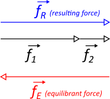
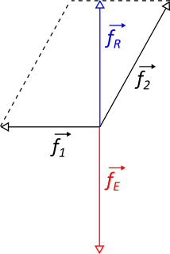
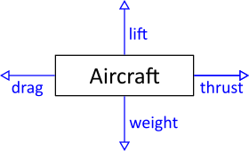
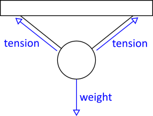
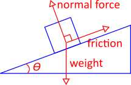
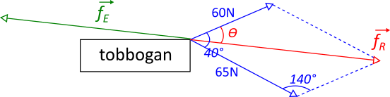
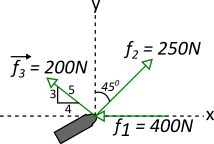
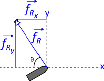

When objects are at rest or move at a constant volocity in a straight line, then the forces that act upon the object cancel each other out. In other words, there is no NET force. The counteracting force is called the equilibrant force. Draw the resultant force and the corresponding equilibrant force for the following forces:






a. Find the resultant force pulling the toboggan forward from a stop.
\(\vert\vec{f_{R}}\vert^2=65^2+60^2-2(65)(60)\cos{140°}\)
\(\vert\vec{f_{R}}\vert=117.5N\)
\( \dfrac{\sin{θ}}{65}=\dfrac{\sin{140°}}{117.5} \implies θ=21°\)
\(\vec{f_{R}}=117.5N \) (21° off of 60N force)
b. Soon the toboggan is travelling at a constant speed. Find the equilibrant force and explain what it represents.
\(\vec{f_{E}}=117.5N \) 159° off of 60N force

Each force is resolved into its x and y components. Summing the x components, we have:
\(\vec{f_{R_{x}}} = \sum \vec{f_{x}}\)
\( \vec{f_{R_{x}}} = -400N + 250 \times\sin{45°}N - 200 \frac{4}{5}N = -383.2N\)
The negative sign indicates that \( \vec{f_{R_{x}}} \) acts to the left, i.e., in the negative x direction. Summing the y components, we have:
\(\vec{f_{R_{y}}} = \sum \vec{f_{y}}\)
\( \vec{f_{R_{y}}} = 250\times\cos{45°}N + 200 \frac{3}{5}N = 296.8N\)

The resulting force has a magnutude of
\( \vec{f_{R}} = \sqrt{(-383.2N)^2 + (296.8N)^2} = 485N\)
From the vector addition, the direction angle θ is
\( θ = tan^-1\left(\dfrac{296.8N}{383.2}\right) = 37.8°\)
Note how convenient this method is, compared to two applicationsof the parallelogram law.